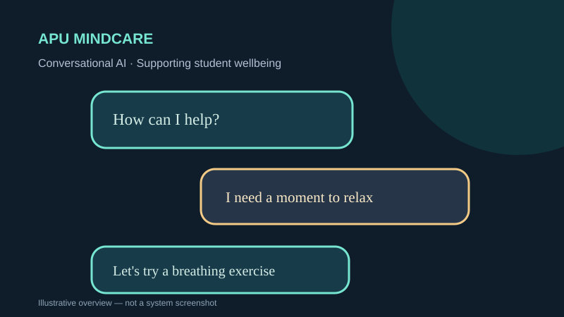

CONVERSATIONAL AI · BOT DESIGN
APU MindCare
A student mental-health support chatbot prototype built for supportive conversations and campus-resource guidance.
BotpressNLPConversation designResearch

Concept illustration · descriptive artwork, not a screenshot of the submitted system
OVERVIEW
What the project is about
The group project explores structured conversations, stress and anxiety support, mindfulness suggestions, and referral to relevant support resources. It is not a medical service.
MY DOCUMENTED WORK
My contribution
- Contributed the report sections on implementation challenges, considered solutions and system features.
- Contributed literature research comparing mental-health chatbot approaches.
- Helped create and present the group presentation, as documented in the submission.
METHODS & DELIVERABLES
Key work covered
- Structured conversational flows and fallbacks
- Supportive messages and coping suggestions
- Navigation to wellbeing and counselling information
- Demonstration and group documentation
EVIDENCE & SCOPE
What this portfolio does and does not claim
This is an educational group prototype, not evidence of clinical effectiveness. A live Botpress deployment has not been independently verified.